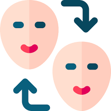
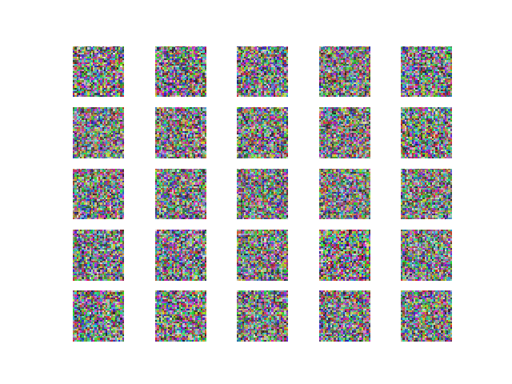

The ride of generative AI has given ride to a new breed of attack vectors known as Deep Fakes. In this article, we will walk through what deep fakes are, including how deepfakes are made, how they are used for deception and a few techniques to detect deepfake media.

Jason Chow
Applied Research Scientist
-
DeepFake Detection
 -
Generative Adversarial Networks
Generative Adversarial Networks were the precursor to modern day transformer based large language models. In this article, we walk through the internals of generative adversarial networks, and how they are used to generate hyper realistic images such as faces, scenary and more.